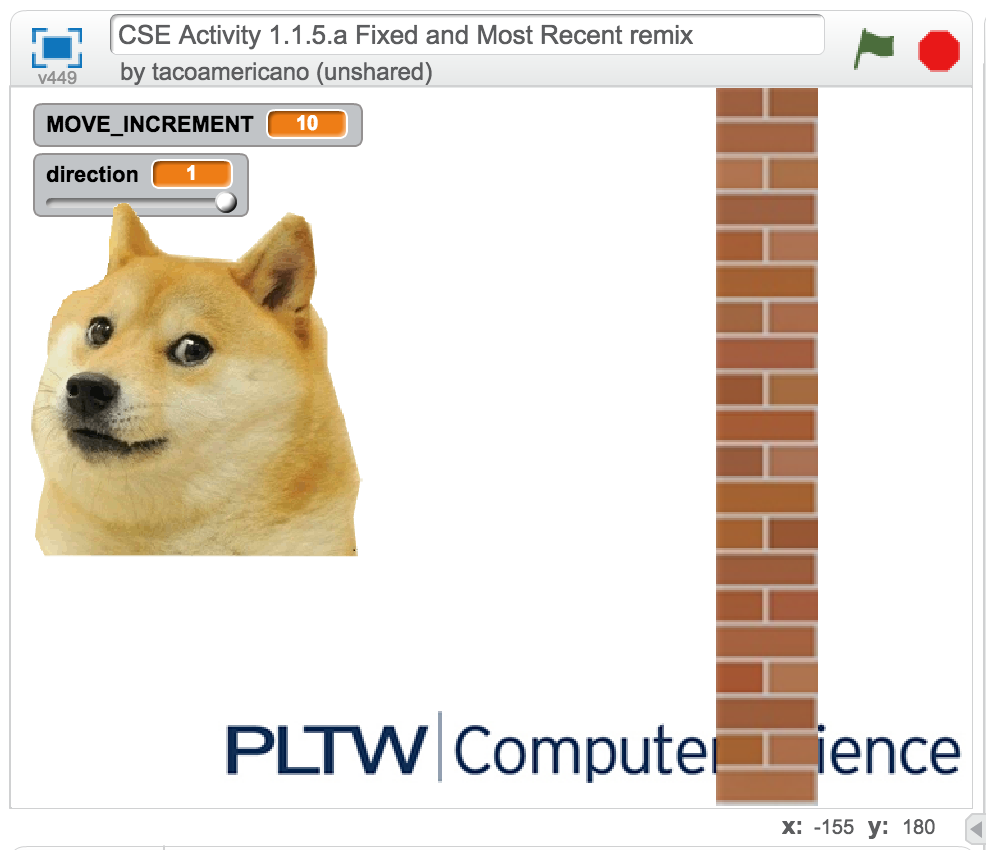
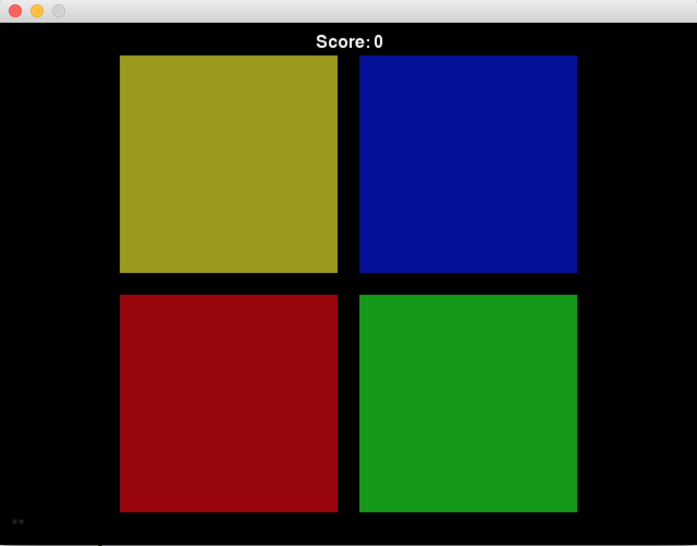
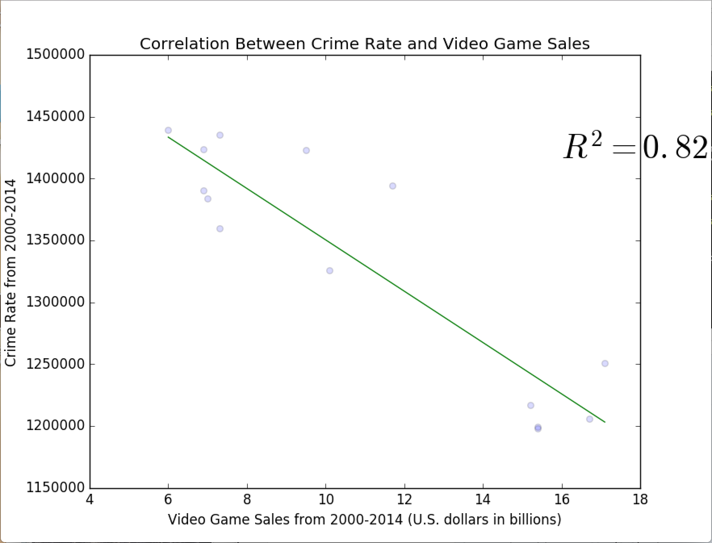

The pictures above display a working fixed-variable as well as an most-recent variable. The role of a fixed variable is quite simple. It acts as the head of the program carrying a value input. Within that input, any value can take its place. However, after its initialization, the value does not change for entire procedural program. In this case, a “doge” will act as the fixed variable. The doge will move back and forth with a certain constant speed. The picture above shows that the doge is moving at a increment of ten. A most recent variable contains updated values that are retrieved from a succession of unpredictable values. For example, when the executer clicks on the doge, the program triggers the most-recent variable. This is because the doge is traveling different distances within the axis.


An accumulator variable has a role to gather and register the sum total of results in an individual value, which in this case can be an aggregator. Here’s an example: the picture above displays a soccer ball and above that shows an accumulator box. Every time an executer clicks on the soccer ball, it triggers the accumulator to record the gathered distance values.


An aggregator variable has a simple role. During an execution of program an accumulator saves a list of individual values that builds up over a course of period. The aggregator receives those values and organizes them greatest to least or the other way around. Then the variable displays the received values from top to bottom. For example, the executer is trying to click on the runner before the runner makes it back to its original phase. At initialization, the scoreboard acts as the aggregator, accumulating all the received values in a given order.


I've managed to program and design a game within Scratch by using all kinds of variable and operations. Though it was difficult and time consuming, but in the end it was all worth it. I am pleased to say that this is a well-made project. I directed this game towards young children who could grasp the concept of scratching programing as well as have a bit of fun.
"How to play" is pretty simple. There are two players. Both of them play against each other to see who finishes first in an obstacle course.
With Scratch, your imagination is endless. You can program interactive stories, intuitive learning ideas, and share your designs online. Scratch has helped me evolve my learning on programs and how they work. I'll do my best to more learn more about scratch and to apply this knowledge into other coding programs. Download Product Backlog Scratch Game


This "Python Interactive Chemisty Project" was quite simple. I've understood the requirements needed in order to have a fully functional story. However, there was some difficulty within the structure of the code, such as understanding the layout of a loop. With some time and consideration, I understood the loop process within Python. In my project I've added more than five functions with four or more loops. Despite the work overload, I took on the challenge. It turned out better than I expected it to be.
To learn more about Python, here are some background info. Python is high-level programming language that consists of code from C++ and Java. It is designed to emphasize code and express people's concepts into fewer lines of coding

This "Python Game App" was extremely difficult. I've understood the requirements needed in order to have a fully functional story. However, there was some difficulty within the structure of the code, such as understanding the layout of a loop. With some time and consideration, I understood the loop process within Python. In my project I've added more than five functions with four or more loops. Despite the work overload, I took on the challenge. It turned out better than I expected it to be. Download Pygame Canopy File
To learn more about Python, here are some background info. Python is high-level programming language that consists of code from C++ and Java. It is designed to emphasize code and express people's concepts into fewer lines of coding

The correlation between “Video Game Sales and Crime Rates” will provide an in-depth visual representation of a lone scatter plot derived from two separate sets of data. The two data sets, crime rate and games sold from 2000 – 2014, will illustrate a relation by inputting a line of best fit. The raw data for these two sets are attained with credibility and assurance. In retrieving the data on the number of crimes, we specifically used the resource www.ucrdatatool.gov which provided our team with accurate uniform crime reporting statistics. In addition, we retrieved raw data from http://bit.ly/2kK3oPI which administered the game sales for each year in the given time interval. Our ultimate goal was to establish a data that will both answer and display the given problem statement. By successfully combining the data sets into a visual representation, we determined the best suited type of graph would be a scatter plot. From running the code, its clearly shown that the crime rate decreases as video game sales increase, since the video games are a substantial substitute for discrediting violent activities. Subsequently, this also benefited us in determining if an action need to be taken to address this social issue. Download Graph Canopy File